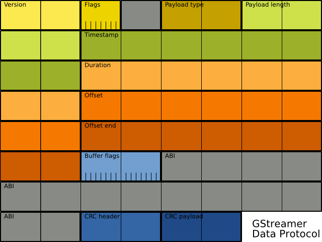

| GStreamer 0.10 Library Reference Manual | ||||
|---|---|---|---|---|
| Top | Description | ||||
#include <gst/dataprotocol/dataprotocol.h> enum GstDPHeaderFlag; enum GstDPPayloadType; #define GST_DP_HEADER_LENGTH enum GstDPVersion; #define GST_DP_VERSION_MAJOR #define GST_DP_VERSION_MINOR void gst_dp_init (void); gboolean (*GstDPHeaderFromBufferFunction) (const GstBuffer *buffer,GstDPHeaderFlag flags,guint *length,guint8 **header); gboolean (*GstDPPacketFromCapsFunction) (const GstCaps *caps,GstDPHeaderFlag flags,guint *length,guint8 **header,guint8 **payload); gboolean (*GstDPPacketFromEventFunction) (const GstEvent *event,GstDPHeaderFlag flags,guint *length,guint8 **header,guint8 **payload); GstDPPacketizer; GstDPPacketizer * gst_dp_packetizer_new (GstDPVersion version); void gst_dp_packetizer_free (GstDPPacketizer *packetizer); guint16 gst_dp_crc (const guint8 *buffer,guint length); guint32 gst_dp_header_payload_length (const guint8 *header); GstDPPayloadType gst_dp_header_payload_type (const guint8 *header); gboolean gst_dp_header_from_buffer (const GstBuffer *buffer,GstDPHeaderFlag flags,guint *length,guint8 **header); gboolean gst_dp_packet_from_caps (const GstCaps *caps,GstDPHeaderFlag flags,guint *length,guint8 **header,guint8 **payload); gboolean gst_dp_packet_from_event (const GstEvent *event,GstDPHeaderFlag flags,guint *length,guint8 **header,guint8 **payload); GstBuffer * gst_dp_buffer_from_header (guint header_length,const guint8 *header); GstCaps * gst_dp_caps_from_packet (guint header_length,const guint8 *header,const guint8 *payload); GstEvent * gst_dp_event_from_packet (guint header_length,const guint8 *header,const guint8 *payload); gboolean gst_dp_validate_header (guint header_length,const guint8 *header); gboolean gst_dp_validate_payload (guint header_length,const guint8 *header,const guint8 *payload); gboolean gst_dp_validate_packet (guint header_length,const guint8 *header,const guint8 *payload);
This helper library provides serialization of GstBuffer, GstCaps and GstEvent structures.
This serialization is useful when GStreamer needs to interface with the outside world to transport data between distinct GStreamer pipelines. The connections with the outside world generally don't have mechanisms to transport properties of these structures.
For example, transporting buffers across named pipes or network connections doesn't maintain the buffer size and separation.
This data protocol assumes a reliable connection-oriented transport, such as TCP, a pipe, or a file. The protocol does not serialize the caps for each buffer; instead, it transport the caps only when they change in the stream. This implies that there will always be a caps packet before any buffer packets.
The versioning of the protocol is independent of GStreamer's version. The major number gets incremented, and the minor reset, for incompatible changes. The minor number gets incremented for compatible changes that allow clients who do not completely understand the newer protocol version to still decode what they do understand.
Version 0.2 serializes only a small subset of all events, with a custom payload for each type. Also, all GDP streams start with the initial caps packet.
Version 1.0 serializes all events by taking the string representation of the event as the payload. In addition, GDP streams can now start with events as well, as required by the new data stream model in GStreamer 0.10.
Converting buffers, caps and events to GDP buffers is done using a GstDPPacketizer object and invoking its packetizer functions. For backwards-compatibility reasons, the old 0.2 methods are still available but deprecated.
For reference, this image shows the byte layout of the GDP header:

typedef enum {
GST_DP_HEADER_FLAG_NONE = 0,
GST_DP_HEADER_FLAG_CRC_HEADER = (1 << 0),
GST_DP_HEADER_FLAG_CRC_PAYLOAD = (1 << 1),
GST_DP_HEADER_FLAG_CRC = (1 << 1) | (1 << 0),
} GstDPHeaderFlag;
header flags for the dataprotocol.
typedef enum {
GST_DP_PAYLOAD_NONE = 0,
GST_DP_PAYLOAD_BUFFER,
GST_DP_PAYLOAD_CAPS,
GST_DP_PAYLOAD_EVENT_NONE = 64,
} GstDPPayloadType;
The GDP payload types. a GstEvent payload type is encoded with the
event type number starting from GST_DP_PAYLOAD_EVENT_NONE.
typedef enum {
GST_DP_VERSION_0_2 = 1,
GST_DP_VERSION_1_0,
} GstDPVersion;
The version of the GDP protocol being used.
#define GST_DP_VERSION_MAJOR 0
The major version number of the GStreamer Data Protocol.
#define GST_DP_VERSION_MINOR 2
The minor version number of the GStreamer Data Protocol.
void gst_dp_init (void);
Initialize GStreamer Data Protocol library.
Should be called before using these functions from source linking to this source file.
gboolean (*GstDPHeaderFromBufferFunction) (const GstBuffer *buffer,GstDPHeaderFlag flags,guint *length,guint8 **header);
gboolean (*GstDPPacketFromCapsFunction) (const GstCaps *caps,GstDPHeaderFlag flags,guint *length,guint8 **header,guint8 **payload);
gboolean (*GstDPPacketFromEventFunction) (const GstEvent *event,GstDPHeaderFlag flags,guint *length,guint8 **header,guint8 **payload);
typedef struct {
GstDPVersion version;
GstDPHeaderFromBufferFunction header_from_buffer;
GstDPPacketFromCapsFunction packet_from_caps;
GstDPPacketFromEventFunction packet_from_event;
} GstDPPacketizer;
Data protocol packetizer handle.
GstDPVersion |
the GstDPVersion of the protocol to be used |
GstDPHeaderFromBufferFunction |
buffer serializer function |
GstDPPacketFromCapsFunction |
caps serializer function |
GstDPPacketFromEventFunction |
event serializer function |
GstDPPacketizer * gst_dp_packetizer_new (GstDPVersion version);
Creates a new packetizer.
|
the GstDPVersion of the protocol to packetize for. |
Returns : |
a newly allocated GstDPPacketizer |
void gst_dp_packetizer_free (GstDPPacketizer *packetizer);
Free the given packetizer.
|
the GstDPPacketizer to free. |
guint16 gst_dp_crc (const guint8 *buffer,guint length);
Calculate a CRC for the given buffer over the given number of bytes. This is only provided for verification purposes; typical GDP users will not need this function.
|
array of bytes |
|
the length of buffer
|
Returns : |
a two-byte CRC checksum. |
guint32 gst_dp_header_payload_length (const guint8 *header);
Get the length of the payload described by header.
|
the byte header of the packet array |
Returns : |
the length of the payload this header describes. |
GstDPPayloadType gst_dp_header_payload_type (const guint8 *header);
Get the type of the payload described by header.
|
the byte header of the packet array |
Returns : |
the GstDPPayloadType the payload this header describes. |
gboolean gst_dp_header_from_buffer (const GstBuffer *buffer,GstDPHeaderFlag flags,guint *length,guint8 **header);
gst_dp_header_from_buffer is deprecated and should not be used in newly-written code. use a GstDPPacketizer
Creates a GDP header from the given buffer.
|
a GstBuffer to create a header for |
|
the GstDPHeaderFlag to create the header with |
|
a guint pointer to store the header length in |
|
a guint8 * pointer to store a newly allocated header byte array in |
Returns : |
TRUE if the header was successfully created. |
gboolean gst_dp_packet_from_caps (const GstCaps *caps,GstDPHeaderFlag flags,guint *length,guint8 **header,guint8 **payload);
gst_dp_packet_from_caps is deprecated and should not be used in newly-written code. use a GstDPPacketizer
Creates a GDP packet from the given caps.
|
a GstCaps to create a packet for |
|
the GstDPHeaderFlag to create the header with |
|
a guint pointer to store the header length in |
|
a guint8 pointer to store a newly allocated header byte array in |
|
a guint8 pointer to store a newly allocated payload byte array in |
Returns : |
TRUE if the packet was successfully created. |
gboolean gst_dp_packet_from_event (const GstEvent *event,GstDPHeaderFlag flags,guint *length,guint8 **header,guint8 **payload);
gst_dp_packet_from_event is deprecated and should not be used in newly-written code. use a GstDPPacketizer
Creates a GDP packet from the given event.
|
a GstEvent to create a packet for |
|
the GstDPHeaderFlag to create the header with |
|
a guint pointer to store the header length in |
|
a guint8 pointer to store a newly allocated header byte array in |
|
a guint8 pointer to store a newly allocated payload byte array in |
Returns : |
TRUE if the packet was successfully created. |
GstBuffer * gst_dp_buffer_from_header (guint header_length,const guint8 *header);
Creates a newly allocated GstBuffer from the given header. The buffer data needs to be copied into it before validating.
Use this function if you want to pre-allocate a buffer based on the packet header to read the packet payload in to.
This function does not check the header passed to it, use
gst_dp_validate_header() first if the header data is unchecked.
|
the length of the packet header |
|
the byte array of the packet header |
Returns : |
A GstBuffer if the buffer was successfully created, or NULL. |
GstCaps * gst_dp_caps_from_packet (guint header_length,const guint8 *header,const guint8 *payload);
Creates a newly allocated GstCaps from the given packet.
This function does not check the arguments passed to it, use
gst_dp_validate_packet() first if the header and payload data are
unchecked.
|
the length of the packet header |
|
the byte array of the packet header |
|
the byte array of the packet payload |
Returns : |
A GstCaps containing the caps represented in the packet, or NULL if the packet could not be converted. |
GstEvent * gst_dp_event_from_packet (guint header_length,const guint8 *header,const guint8 *payload);
Creates a newly allocated GstEvent from the given packet.
This function does not check the arguments passed to it, use
gst_dp_validate_packet() first if the header and payload data are
unchecked.
|
the length of the packet header |
|
the byte array of the packet header |
|
the byte array of the packet payload |
Returns : |
A GstEvent if the event was successfully created, or NULL if an event could not be read from the payload. |
gboolean gst_dp_validate_header (guint header_length,const guint8 *header);
Validates the given packet header by checking the CRC checksum.
|
the length of the packet header |
|
the byte array of the packet header |
Returns : |
TRUE if the CRC matches, or no CRC checksum is present. |
gboolean gst_dp_validate_payload (guint header_length,const guint8 *header,const guint8 *payload);
Validates the given packet payload using the given packet header by checking the CRC checksum.
|
the length of the packet header |
|
the byte array of the packet header |
|
the byte array of the packet payload |
Returns : |
TRUE if the CRC matches, or no CRC checksum is present. |
gboolean gst_dp_validate_packet (guint header_length,const guint8 *header,const guint8 *payload);
Validates the given packet by checking version information and checksums.
|
the length of the packet header |
|
the byte array of the packet header |
|
the byte array of the packet payload |
Returns : |
TRUE if the packet validates. |